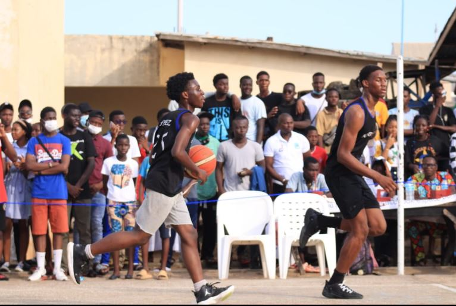

Team athletics · Team captain since 2015 · Cotonou & Paris Region
Basketball: collective discipline and team leadership
I have played competitive basketball for over ten years across clubs, high school teams, and university leagues. Serving as team captain since 2015 has shaped how I approach collaboration, communication, and decision-making under pressure.

Athletic background
Ten years on the court between Benin and France
My competitive experience spans diverse environments that each strengthened my adaptability:
- In Cotonou (Benin): club competition and varsity play with EFE Montaigne, capturing several national inter-school tournament titles as team captain.
- During preparatory classes (Paris): sustained regular practice at Lycée Saint-Louis to balance intensive academic coursework with team sport.
- At ESIEE Paris: active member of the engineering school’s varsity roster, competing in Île-de-France university championships and tournaments.
Captaincy
Uniting teammates, adapting tactics, and staying composed
Playing point guard while serving as team captain taught me to bridge communication between coaches and players and maintain squad cohesion during pivotal stretches of a game or tournament.
These habits translate directly to engineering project management: aligning a team around a clear objective, leveraging individual strengths, communicating calmly when the pace accelerates, and owning collective outcomes.
On the court
Competition and team milestones
